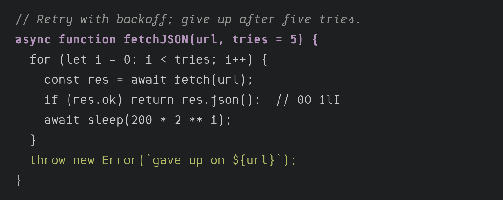
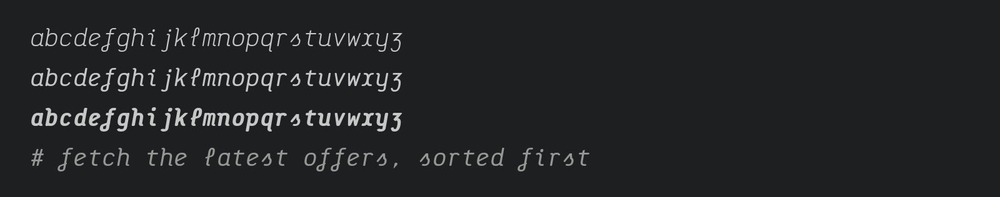

Saguna Mono is a rounded monospace for code, made by Partech Systems. It has a light, open rhythm, soft round stroke ends and squarish rounds, and a true cursive italic.

The upright is drawn for reading code at 11 to 16 pixels. The characters that are easy to confuse are kept apart: 0 has a round dot inside, l ends in a tail, 1 has a flag and a foot, and I has bars. The operators fill the cell and sit on one maths axis, so ->, => and <= line up without ligatures. Box drawing and block elements fill the line, so terminal interfaces join seamlessly.

The italic is a real hand rather than a slanted upright. Stems start with an entry stroke and end in an exit flick, l is a loop, f loops below the baseline, s rises to a point and swings into its belly, z is drawn as ʒ, and r, q and k flick out. In code, comments set in the italic read as handwritten notes beside the code.
Saguna Mono comes in weights from Light to Bold (300 to 700), each with an italic, and covers the Latin of every European language. It was built with a custom pen engine: every glyph is drawn as a skeleton stroked with a round-ended elliptical pen, and the weights interpolate from three masters.